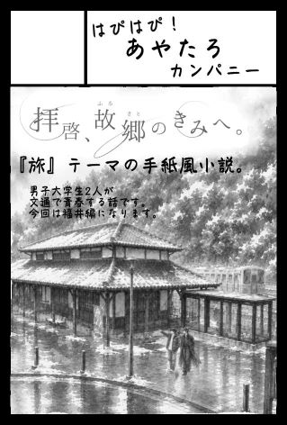
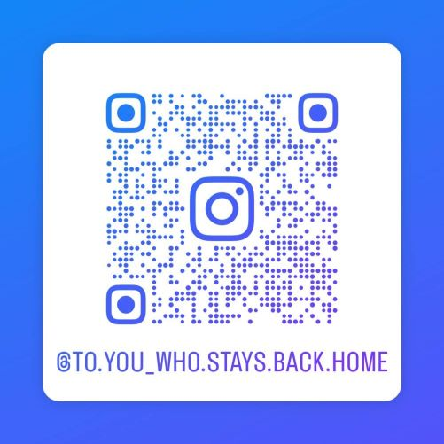

2026/04/17
私の小説をプロの人に読んでもらって課題点と強みを聞きました。最初数か月間は発行する前に読んでもらおうと思います。
2026/05/01
表紙やSNSに載せるために写真を撮りに行きました。福井は雨でしたが、AIに頼んだら晴らしてくれるのでいい時代だと思います。
また、福井で働いている友人と話したら、本を置かせてもらえそうな店を教えてもらいました。
友人が設立を手伝った会社で、本のセレクトショップだそうです。
2026/05/13
地方創生の活動をしている和歌山の友達と会いました。来年和歌山を取り上げたいと思っているので、地元民におすすめの場所を聞きました。
今度案内をしてもらう約束をしました。
2026/05/07
ロゴをココナラで依頼しました。ココナラを使うのは初めてなので、使い方も模索中です。
2026/05/14
表紙のイラストをココナラで依頼しました。依頼する人の条件として、次の通りの人を探すのに時間がかかりました。
１，水彩画or色鉛筆風の画風の人（AI絵師は×）
２，二か月に一回の定期購入を二年間継続可能な人
３，2~3万円で依頼を受け付けている人
４，ヒアリングをしっかり行っている人
３について、料金の下限を設定しているのはある程度の品質を担保してもらうためです。
AI絵師が良くない理由も、意図せぬ現実との齟齬を防ぐためです。 （クリエイティブな分野において、過度なAIの使用は良くない印象をあたえますし、、）
また、表紙は大事な情報になるため、後日しっかりヒアリングシートを書きました。
ここはプログラミングの経験が役に立った気がします。
認識の噛み違いを起こさないため、個人の価値観に基づく言葉は使わないようにしました。


簡単な構図のスケッチも送りました。


まずラフが送られてくるようです。待ちたいと思います。
2026/05/15
ロゴが届きました最初の依頼文で誤字を送ってしまい、一部作り直しになってしまいました。
追加料金は掛からなかったのですが、次から気を付けたいです
ちなみに「拝啓」を「背景」と誤字っていました。
また、「後で確認しよう」と思っていたのですが、ロゴのサイズと解像度を聞く前にトークルームをクローズしてしまいました。
ココナラは取引が終わるとデザイナーと話せなくなるのでやらかしです。最悪上からなぞってどうにか、、、
2026/5/29
6月まで何もすることがないのが落ち着かず、ココナラのイラストレーターさんの進捗が気になりました。ラフが送られると言われてからもうすぐ二週間たつが大丈夫だろうかと連絡しようか迷いましたが、
向こうにも生活がある上に他にも依頼を受けているのかもしれないと思い、まだ止そうと思います。
明後日の日曜日で納期二週間前になるので、そのタイミングで声かけようと思います。
2026/5/31
イラストレーターさんに連絡してみました。あと数日でラフが仕上がり、その後はかなりのスピード感で仕上がるそう。また待機します。
そういえば、ロゴのサイズですが、印刷サイズで108mmらしいです。意外とあったので、表紙はこのまま作ろうと思います。
ポスター作るときはまた改めて考えます。
2026/6/5
ラフが届きました！ただ、ちょっと思ってたのと違くて焦りです。
ラフはHPに載せられないので言葉での説明になるのですが、風景画として頼んだはずが人物メインになってしまいました。
最悪お金で解決できるだろうし、妥協したくなかったので風景メインにできないか頼んでみました。
また、ついでに色々気になった点も送ってみます。
せっかく素敵なラフ書いてくれたのに申し訳ねぇです、、、
↑この文章をビジネス文書に直して送りました。
【反省】
・依頼文に人物についての情報量が多すぎた
・背景メインにしたいってもっと書けば良かった
（商品ページに「風景画」って書いてあったから、それで伝わってると思ってた）
・そもそも資料としての写真が分かりづらかった
・人物については割とイメージ通り！ Aはもうちょっとはっちゃけててもいいかも？ 同じポーズなのが気になる
2026/6/6
まだラフの段階だったからタダで修正してくださるそうです。優先して制作してくださるとのことで、頭の上がらない思いでやばいです。
完成を待ちます。
2026/6/9
訂正版のラフが届きました！超いいので、このまま進めてもらいます。
2026/6/13
小説用のメールアドレスを作りました。以降連絡やデータのやり取りはこのアドレスで行おうと思います。少し別件なのですが、真鍋さんから未来クリエイターズの推薦コードをもらいました。
さっそく応募しようと思ったのですが、写真をどうしようか迷ってしまい、申し込みあぐねています。
候補いくつかあるので色んな人に相談しようと思います。
2026/6/14
表紙イラストが完成しました！正式な納品があり、A6サイズとA1サイズ（＋塗り足し）でデータをいただきました。
また、表紙や奥付にクレジットを載せてもいいか聞き、今はもうトークルームをクローズしています。
また次は七月ごろに依頼するつもりですが、それまでやりとり出来ないのでドキドキですね。
2026/6/15
インスタ開設、及び文学フリマの申し込みをしました。インスタは開設してすぐに動いたら凍結された記憶があるので、作成初日はプロフィールの設定だけして放置しました。
取り敢えず最初の投稿の下書きだけして、公開するタイミングで一気に知り合いにフォローしてもらおうと思います。
また、９月の大阪のイベントに申し込みました。
案の定抽選です。
イラスト使うかなと思ってまだ申し込んでなかったのですが、なんか使わなかったです。
（おそらく、文学メインのフリマだから……）
あとから編集やキャンセルもできるようだったので、とりあえず今あるイベント全部申し込みました。
来年一月の京都は先着枠に入れたのですが、それまでの毎月のはすべて抽選枠になりました。
まぁ、四月に計画を立てた段階で申し込んでても抽選だったと思うので、あまり考えないようにします。
これ落ちたらその時考えますが、別のフリマに申し込もうと思います。
（このイベントにこだわる理由は、参加者の財布が一番緩んでそうだからです）
2026/6/17
コミティアに申し込みました。サークルカットという広告が必要だったので、それも作りました。

2026/6/19
９月の大阪のイベントに受かりました。お金払えば出店確定です！
払い忘れないようにしたいです
2026/6/21
ついにインスタを動かし始めました！下記リンク先にあります！
数字が本当に大事なので、ぜひフォローしてってください！
専用アカウント
